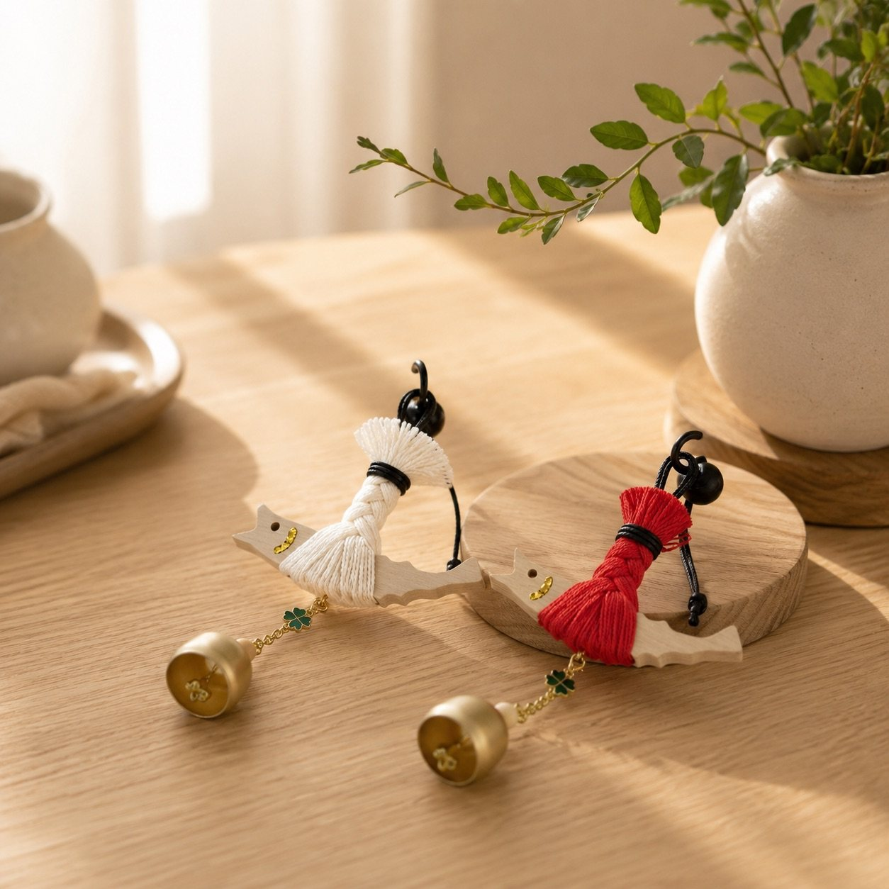
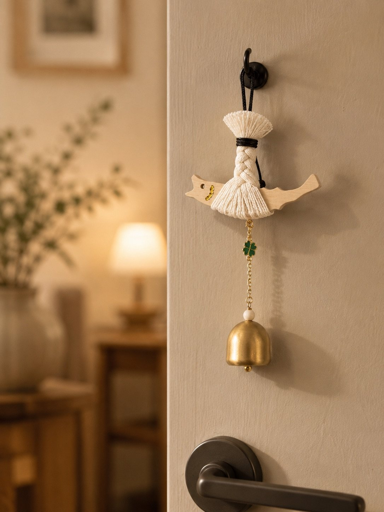
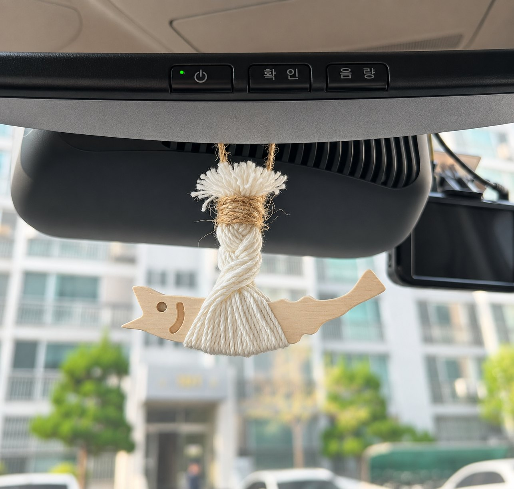
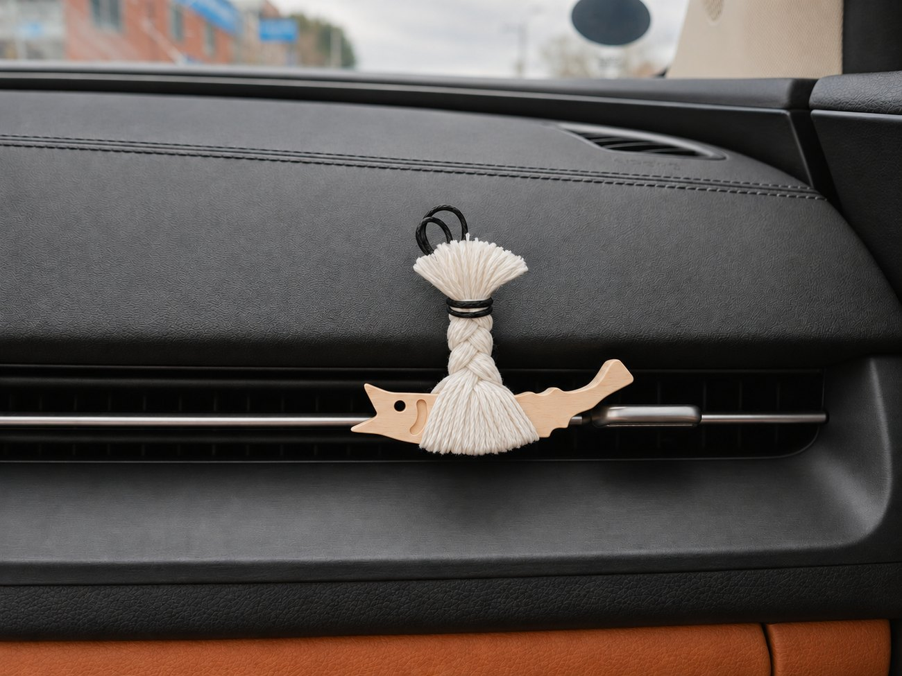
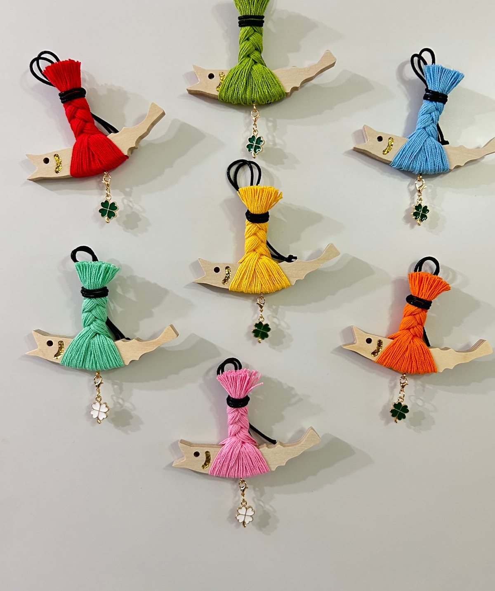
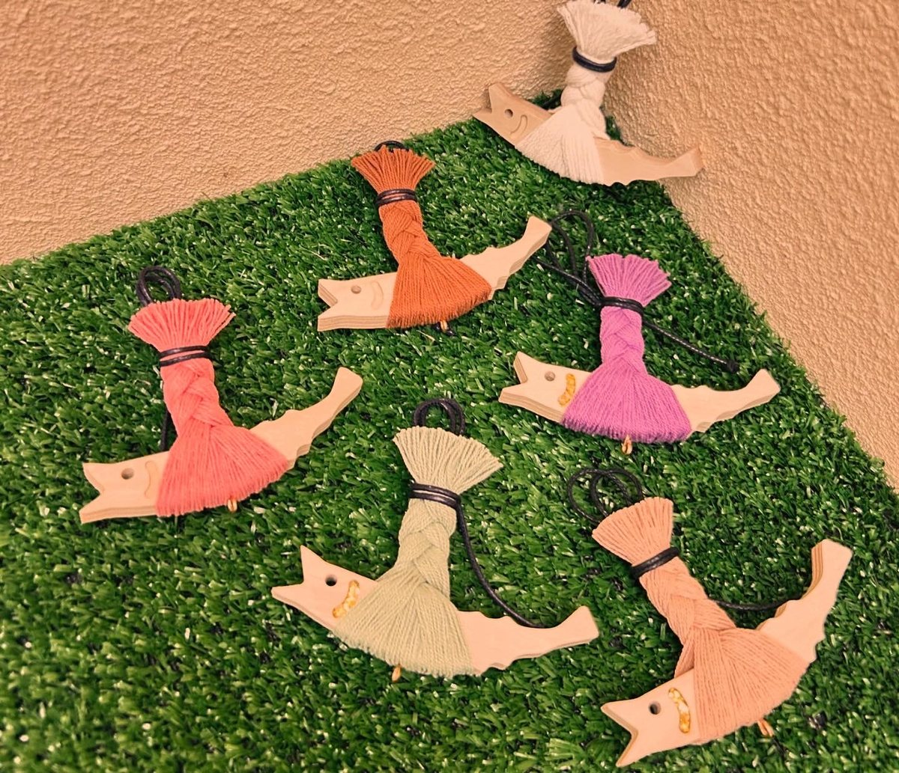
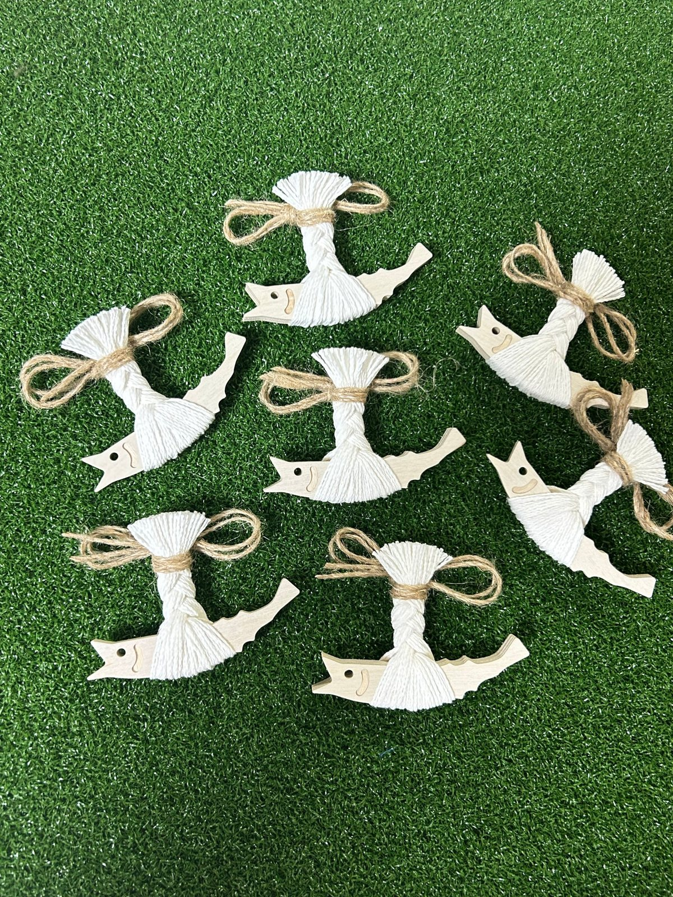
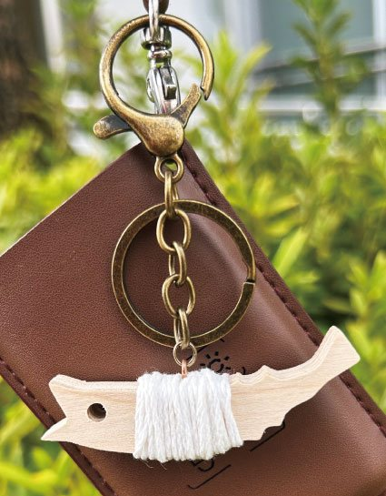
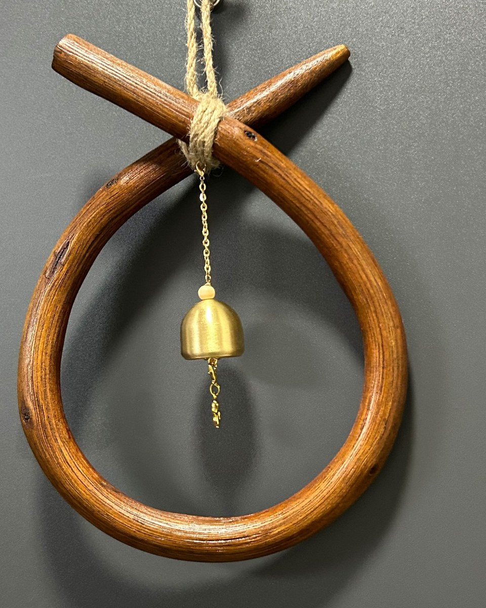
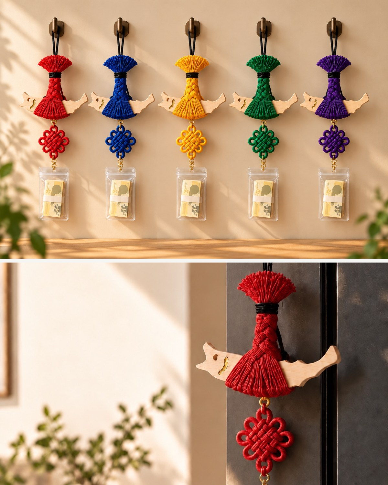

이름에 담은 뜻
Luck + In + Fish
행운이 안으로 들어오는 물고기. 명태 한 마리에 담은 건 미신이 아니라, 곁을 지키고 싶은 마음이에요.
100% 핸드메이드
대전의 작은 공방에서 하나씩 감고 엮어요. 같은 제품도 매듭과 표정이 조금씩 달라요.
전통을 오늘의 색으로
차 안, 현관, 책상 어디에도 은은하게 어울리도록 색과 모양을 덜어냈어요.
디자인 등록 완료
복태 캐릭터는 저작권과 디자인권 등록을 마쳤어요. 럭인피쉬에서만 만나요.

럭인피쉬 현관 도어벨
예로부터 대문에 명태를 걸어 나쁜 기운을 막았다고 전해집니다. 네잎클로버와 작은 종을 달아, 그 자리에 다시.

나무 명태에 실을 감고 땋아 하나씩 만들어요. 매듭도 표정도 조금씩 달라요.
전통의 명태에 모두가 아는 행운의 상징을 더했어요.
눈으로 보고, 귀로도 들어요. 손님 맞는 가게 문에도 잘 어울려요.
차량용 걸이
룸미러에 걸거나 송풍구 마그넷으로. 운전하는 자리 가까이에 두세요.

끈을 룸미러에 묶어 걸어요.

송풍구 날개에 꽂아서 달아요.
자개 에디션 · 새로 나왔어요
명태 위에 자개 조각을 하나하나 붙였어요. 문이 열릴 때마다 종이 울리고, 자개는 보는 각도마다 다른 빛을 내요.
문의하기 ›컬러
일곱 가지 실 색에 네잎클로버 참까지.
색상 보기 ›
시크 컬러
로즈, 브라운, 라벤더, 세이지, 베이지.
색상 보기 ›

선물
이사, 개업, 시험을 앞둔 사람에게. 바다 건너 사는 가족과 친구에게도 많이 보내요. 여러 개가 필요하면 미리 말씀해 주세요.
선물 문의하기 ›행운 키링
가방에, 열쇠에, 텀블러에.
더 알아보기 ›
소코뚜레
천연 원목 소코뚜레에 작은 종을. 명태를 함께 걸어도 좋아요.
더 알아보기 ›
매듭 컬렉션 · 준비 중
전통 매듭을 단 새 컬렉션을 준비하고 있어요.
소식 받기 ›
이미지는 콘셉트 시안이에요.
이름에 담은 뜻
행운이 안으로 들어오는 물고기. 명태 한 마리에 담은 건 미신이 아니라, 곁을 지키고 싶은 마음이에요.
대전의 작은 공방에서 하나씩 감고 엮어요. 같은 제품도 매듭과 표정이 조금씩 달라요.
차 안, 현관, 책상 어디에도 은은하게 어울리도록 색과 모양을 덜어냈어요.
복태 캐릭터는 저작권과 디자인권 등록을 마쳤어요. 럭인피쉬에서만 만나요.